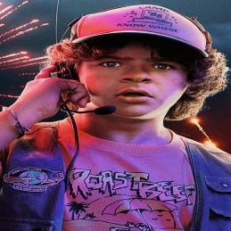
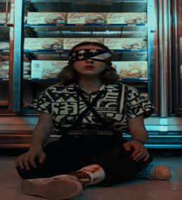
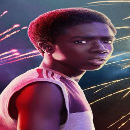
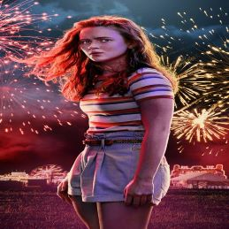
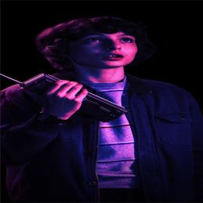
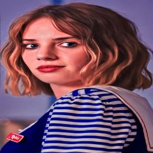
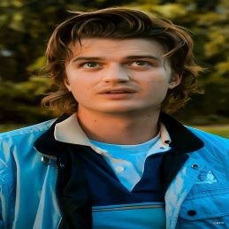
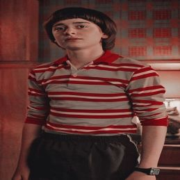

-
Dustin
Descrição
Dustin é o pateta do grupo de amigos e sofre de displasia cleidocraniana.Ele é observador e frequentemente resolve os conflitos dentro do grupo, e acaba fazendo amizade com alguém inusitado, o Steve, que lhe dá conselhos amorosos. O jovem inclusive arranja uma namorada misteriosa que ninguém acredita que ela exista - mas ela existe sim!
-
Eleven
Descrição
A personagem principal, seu nome verdadeiro é Jane e ela foi sequestrada aida bem jovem e enviada ao Laboratório de Hawkins, onde passou por duros experimentos para desenvolver as habilidades em telecinesia, que resultou na abertura de um portal para o Mundo Invertido, uma dimensão que conta com criaturas monstruosas e mortais, como o Demogorgon.
-
Lucas
Descrição
Lucas é o mais cauteloso do grupo, o que inclui o seu relacionamento inicial com Eleven, mas ele acaba fazendo amizade com a garota mais tarde. Ele é bastante habilidoso com o uso do estilingue, salvando seus amigos de perigos com ele. Ele acaba se tornando um interesse amoroso para Max, a meia-irmã do problemático Billy (que acabou morrendo na terceira temporada).
-
Max
Descrição
Maxine "Max" Mayfield, após o divórcio de seus pais e o novo casamento de sua mãe, Max e sua família, se mudaram da Califórnia para Hawkins , Indiana em outubro de 1984.Em 1985, ela e Eleven formaram uma forte amizade, unindo-se aos problemas de relacionamento. No entanto, Max logo descobriu que o perigo de Mundo Invertido havia retornado a Hawkins, pois o Devorador de Mentes possuiu seu meio-irmão, Billy Hargrove .
-
Mike
Descrição
Mike é um dos três filhos de Karen e Tedd Wheeler e irmão mais novo de Nancy. É um jovem inteligente (geralmente desempenha o papel de Mestre de Jogo nas partidas de D & D) e é comprometido com seus amigos. Mike e Eleven chegam a namorar, mas passam por um relacionamento conturbado, se separando definitivamente no final da terceira temporada.
-
Robin
Descrição
Robin começou a trabalhar na Scoops Ahoy, localizada no Starcourt Mall no verão de 1985, junto de seu colega formando Steve Harrington. Robin gostava de zombar de Steve, já que ela tinha um pouco de ciúmes dele durante o período escolar por causa de sua crush, Tammy Thompson, que gostava dele.
-
Steve
Descrição
O estudante popular da escola, bonitão, rico e super-atleta, tinha um relacionamento com Nancy, mas acabou sendo trocado pelo rival Jonathan. Embora seja apresentado como um cara desagrádavel, Steve passa por uma evolução de comportamento e chega a criar uma grande amizade com Dustin e se torna protetor do grupo de crianças.
-
Will
Descrição
Will é o mais jovem do grupo de garotos, irmão de Jonathan é filho de Joyce, é ele quem desaparece sem deixar vestígios na primeira temporada, fazendo com que os outros garotos começam uma missão para resgatá-lo, quando eventualmente encontram Eleven na floresta.